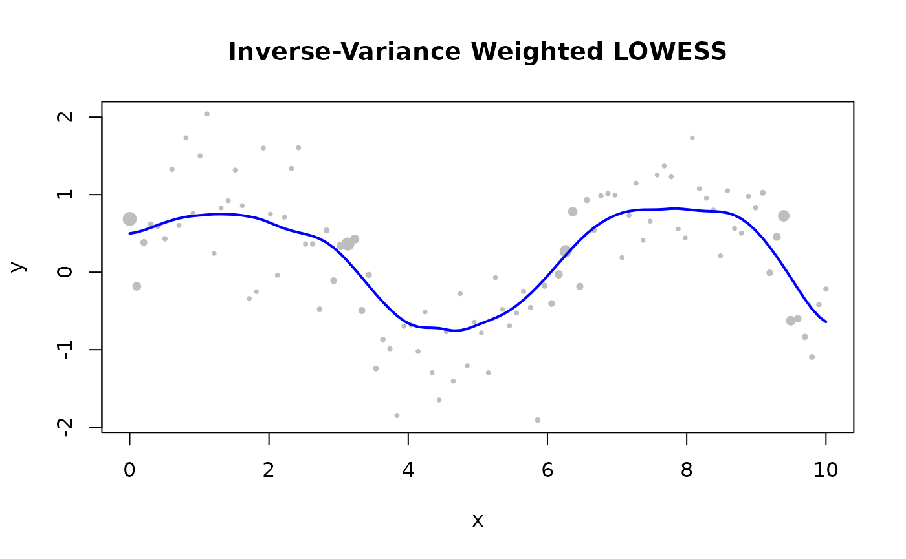

How Custom Weights Work
Per-observation weights encode data quality directly into the LOWESS fit. Standard LOWESS assigns equal prior trust to all observations. Custom weights let you override this assumption point by point — before any distance or robustness weighting is applied.
The effective weight of observation in a local fit centred at is:
where is the distance kernel, is the local bandwidth, and is the robustness weight from the current iteration.
Note:
custom_weightsapplies in Batch mode only. It is silently ignored in Streaming and Online adapters.
When to Use Custom Weights
| Situation | Recommended weight |
|---|---|
| Point known to be erroneous |
0.0 — fully excluded |
| Unreliable sensor / low precision | 0.1 – 0.5 |
| Standard observation |
1.0 (default) |
| Carefully calibrated measurement | > 1.0 |
| Measurement uncertainty |
Custom Weights vs. Robustness Iterations
| Custom Weights | Robustness Iterations | |
|---|---|---|
| When known | Before fitting | Computed from residuals |
| Knowledge required | Prior knowledge of quality | None — data-driven |
| Effect | Fixed throughout fit | Adapts each iteration |
| Use case | Bad sensors, calibration | Unknown outlier contamination |
They compose: use both simultaneously. Custom weights suppress known bad points; robustness iterations handle residual outliers.
Suppress a Known Outlier
Set the weight to 0 at the bad point — it is excluded
from every local fit.
library(rfastlowess)
x <- 1:10
y <- x * 2.0
y[6] <- 100.0 # spike at index 6
weights <- rep(1.0, 10)
weights[6] <- 0.0 # exclude the spike
model <- Lowess(fraction = 0.5, iterations = 0L)
result <- fit(model, x, y, custom_weights = weights)
cat("First 6 smoothed values (outlier excluded, no robustness):\n")
#> First 6 smoothed values (outlier excluded, no robustness):
print(head(result$y))
#> [1] 2.572621 4.000000 6.000000 8.000000 10.000000 12.000000Inverse-Variance Weights
Weight by when measurement uncertainties are known.
library(rfastlowess)
set.seed(42)
x <- seq(0, 10, length.out = 100)
y <- sin(x) + rnorm(100, sd = 0.5)
# Measurement precision varies along x
sigma <- 0.1 + 0.5 * abs(sin(x))
weights <- 1 / sigma^2
model <- Lowess(fraction = 0.3)
result <- fit(model, x, y, custom_weights = weights)
plot(x, y, pch = 16, cex = 0.5 + weights / max(weights),
col = "gray", main = "Inverse-Variance Weighted LOWESS")
lines(result$x, result$y, col = "blue", lwd = 2)
Combining Custom Weights with Robustness
library(rfastlowess)
set.seed(42)
x <- 1:100
y <- sin(x / 10) + rnorm(100, sd = 0.3)
# Known bad region: indices 40–50
weights <- rep(1.0, 100)
weights[40:50] <- 0.1
# Also use robustness for unknown outliers
model <- Lowess(fraction = 0.3, iterations = 3)
result <- fit(model, x, y, custom_weights = weights)
cat("First 6 smoothed values (custom weights, robust fitting):\n")
#> First 6 smoothed values (custom weights, robust fitting):
print(head(result$y))
#> [1] 0.5716412 0.5904751 0.6108481 0.6322355 0.6533279 0.6729328
sessionInfo()
#> R version 4.6.1 (2026-06-24)
#> Platform: x86_64-pc-linux-gnu
#> Running under: Ubuntu 24.04.4 LTS
#>
#> Matrix products: default
#> BLAS: /usr/lib/x86_64-linux-gnu/openblas-pthread/libblas.so.3
#> LAPACK: /usr/lib/x86_64-linux-gnu/openblas-pthread/libopenblasp-r0.3.26.so; LAPACK version 3.12.0
#>
#> locale:
#> [1] LC_CTYPE=C.UTF-8 LC_NUMERIC=C LC_TIME=C.UTF-8
#> [4] LC_COLLATE=C.UTF-8 LC_MONETARY=C.UTF-8 LC_MESSAGES=C.UTF-8
#> [7] LC_PAPER=C.UTF-8 LC_NAME=C LC_ADDRESS=C
#> [10] LC_TELEPHONE=C LC_MEASUREMENT=C.UTF-8 LC_IDENTIFICATION=C
#>
#> time zone: UTC
#> tzcode source: system (glibc)
#>
#> attached base packages:
#> [1] stats graphics grDevices utils datasets methods base
#>
#> other attached packages:
#> [1] rfastlowess_3.0.0 BiocStyle_2.40.0
#>
#> loaded via a namespace (and not attached):
#> [1] cli_3.6.6 knitr_1.51 rlang_1.3.0
#> [4] xfun_0.60 otel_0.2.0 generics_0.1.4
#> [7] textshaping_1.0.5 jsonlite_2.0.0 htmltools_0.5.9
#> [10] ragg_1.5.2 sass_0.4.10 rmarkdown_2.31
#> [13] evaluate_1.0.5 jquerylib_0.1.4 fastmap_1.2.0
#> [16] yaml_2.3.12 lifecycle_1.0.5 bookdown_0.47
#> [19] BiocManager_1.30.27 compiler_4.6.1 fs_2.1.0
#> [22] htmlwidgets_1.6.4 systemfonts_1.3.2 digest_0.6.39
#> [25] R6_2.6.1 bslib_0.12.0 tools_4.6.1
#> [28] BiocGenerics_0.58.1 pkgdown_2.2.1 cachem_1.1.0
#> [31] desc_1.4.3